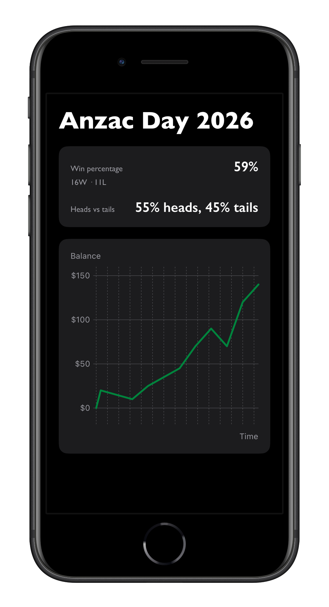

Create sessions like “ANZAC Day 2026” and capture every round you play.
Watch your running balance update after each round with a clear Swift Charts line graph.
Track total profit or loss, win rate, average bet size, and longest win/loss streaks.
Scroll through previous rounds to see how individual bets contributed to your result.
Enter multiple bets per toss with their amount and prediction so you can review exactly what you did.
Built with SwiftUI and a clean, modern interface that feels right at home on iPhone.

What is TwoUpTracker?
TwoUpTracker is a purpose-built tracker for the Australian game Two-Up. Instead of vague memories of how you went, you get a precise record of every session, round and bet.
The app focuses on fast data entry during play and rich insight afterwards, so you can understand your tendencies, streaks and risk over time.
- Capture every session with structured rounds and bets
- See a running balance graph that updates after each round
- Review key stats like win rate, average bet and streaks